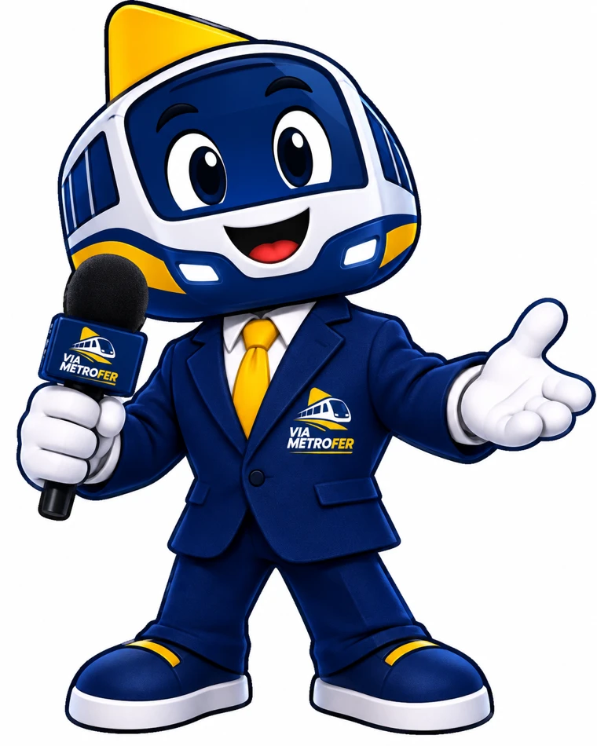

Quem somos

“Esse é o nosso mascote Vito, a cara usada pelo portal para fazer comunicação.”Remotamente, cobrimos as principais notícias e informações do transporte sobre trilhos na Região Metropolitana de São Paulo.
Credenciados à Agência Brasil 61 e à iNFRA, cobrimos também tópicos e curiosidades sobre o transporte metropolitano ao redor do mundo.
- Agência Brasil 61
- iNFRA
TerçaNotícias atuais e pontuais
QuintaCuriosidades e outros tipos de vídeo
Vídeos em destaque
Deslize para ver mais. Toque no play para assistir aqui mesmo.